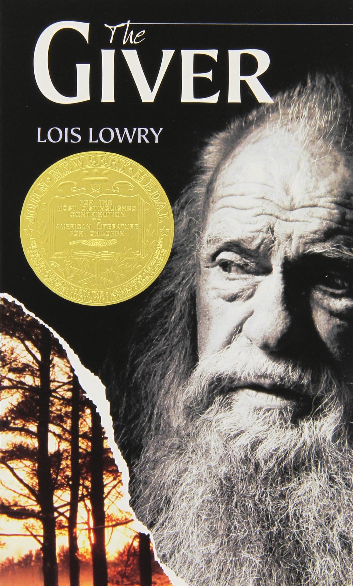

The Giver
Author: Lois Lowry
ISBN-10: 0544336267
ISBN-13: 978-0544336261
Price: $4.39
Description
The Giver is a 1993 American young-adult dystopian novel by Lois Lowry. It is set in a society which at first appears to be a utopian society but is revealed to be a dystopian one as the story progresses. The novel follows a boy named Jonas through the 12th and 13th years of his life. The society has eliminated pain and strife by converting to "Sameness," a plan that has also eradicated emotional depth from their lives. Jonas is selected to inherit the position of Receiver of Memory, the person who stores all the past memories of the time before Sameness, as there may be times where one must draw upon the wisdom gained from history to aid the community's decision making. Jonas struggles with concepts of all the new emotions and things introduced to him: whether they are inherently good, evil, or in between, and whether it is even possible to have one without the other. The Community lacks any color, memory, climate and terrain, all in effort to preserve structure, order, and a true sense of equality beyond personal individuality.
The Giver won the 1994 Newbery Medal and sold more than 10 million copies worldwide to 2014. In Australia, Canada, and the United States, it is on many middle school reading lists, but it is also frequently challenged and it ranked number 11 on the American Library Association list of the most challenged books of the 1990s. A 2012 survey based in the U.S. designated it the fourth-best children's novel of all time.
About the Author
Lois Lowry (born Lois Ann Hammersberg; March 20, 1937) is an American writer credited with more than thirty children's books. She has won two Newbery Medals, for Number the Stars in 1990 and The Giver in 1994. For her contribution as a children's writer, she was a finalist in 2000 (and U.S. nominee again in 2004, as well as a finalist in 2016) for the biennial, international Hans Christian Andersen Award, the highest recognition available to creators of children's books. Her book Gooney Bird Greene won the 2002 Rhode Island Children's Book Award. In 2007 she received the Margaret Edwards Award from the American Library Association for her contribution in writing for teens. In 2011 she gave the May Hill Arbuthnot Lecture; her lecture was titled "UNLEAVING: The Staying Power of Gold". She was also awarded an honorary Doctorate of Letters by Brown University in 2014.
As an author, Lowry is known for writing about difficult subject matters within her works for children. She has explored such complex issues as racism, terminal illness, murder, and the Holocaust among other challenging topics. She has also explored very controversial issues of questioning authority such as in The Giver quartet. Her writing on such matters has brought her both praise and criticism. In particular, her work The Giver, the first novel in The Giver quartet, has been met with a diversity of reactions from schools in America, some of which have adopted it as a part of the mandatory curriculum, while others have prohibited the book's inclusion in classroom studies. The Giver has also been made into a film, also called The Giver, which was released in 2014.